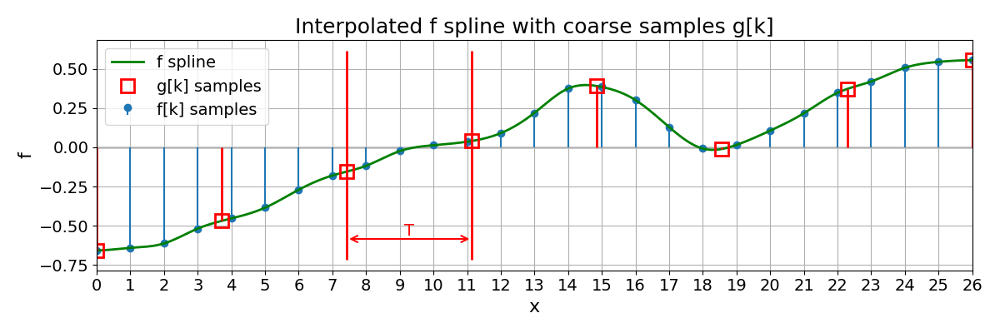
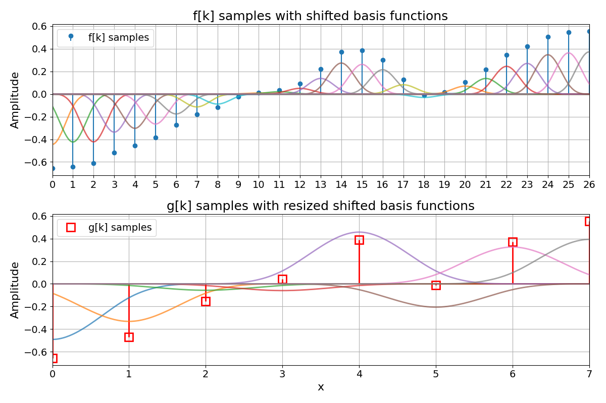
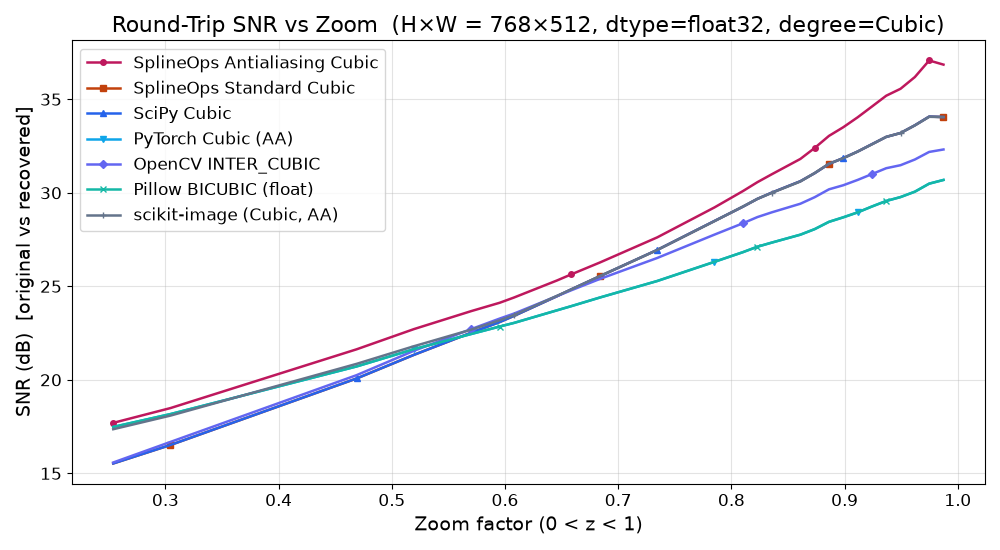
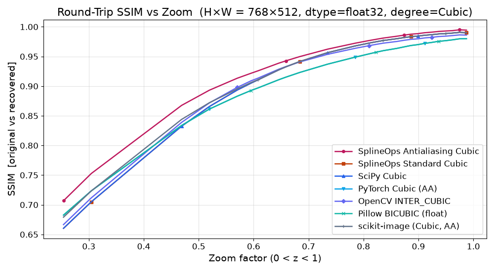
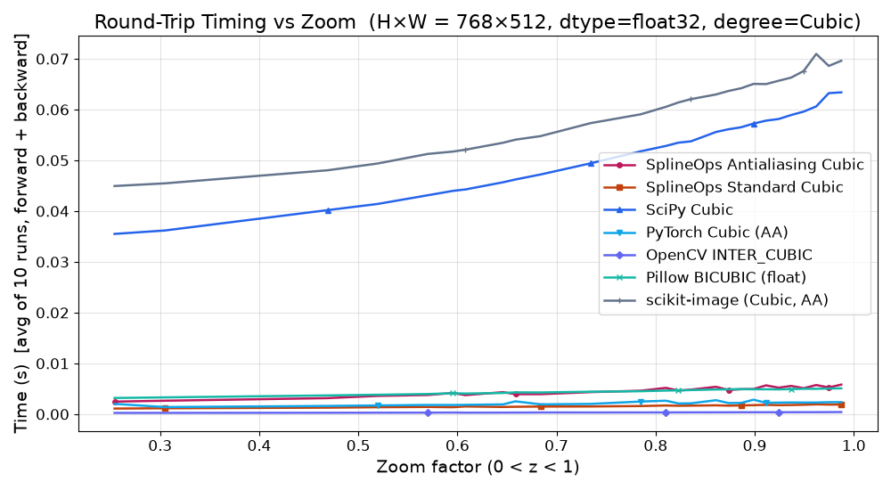

Resize#
Overview#
The resize module in SplineOps provides high-performance, high-fidelity resizing for N-dimensional arrays.
This module allows us to obtain classical standard cubic interpolation (see following animation, at left) and high-quality antialiasing projection-based (see following animation, at right).
This animation and its details are available in the example Resize Module 2D.
Recommended Downsampling Presets#
For production downsampling, prefer the antialiasing presets:
from splineops.resize import resize
y2d = resize(image, zoom_factors=(0.5, 0.5), method="cubic-antialiasing")
y3d = resize(volume, zoom_factors=(0.5, 0.5, 0.5), method="cubic-antialiasing")
For arrays with batch or channel dimensions, select the spatial axes explicitly. Unselected axes are exact identity axes and incur no projection pass:
# H x W x C -> resize H and W without filtering across colour channels.
rgb_small = resize(
rgb,
output_size=(256, 256),
axes=(0, 1),
method="cubic-antialiasing",
)
The *-antialiasing methods are oblique-projection spline resize presets.
They keep the same synthesis spline degree as the corresponding interpolation
method, but use a lower-degree analysis space:
linear-antialiasingmaps to(interp=1, analy=0, synthe=1).quadratic-antialiasingmaps to(interp=2, analy=1, synthe=2).cubic-antialiasingmaps to(interp=3, analy=1, synthe=3).
This is the recommended public method family for antialiasing resize. It is
less expensive than equal-degree least-squares projection in production
downsampling cases, while preserving the spline model and high-quality N-D
behavior. Equal-degree least-squares remains available through
resize_degrees for advanced and reference use, but it is deliberately not
exposed as a routine preset.
For an input axis of length \(N\) and an output axis of length \(M\),
splineops uses one canonical endpoint-aligned grid. A requested zoom
\(z\) first determines the integer output length using half-away-from-zero
rounding,
Once \(M\) is known, the nominal zoom no longer participates in the resampling kernel. For \(N,M>1\), output index \(l\) maps to input coordinate
Thus two zoom requests that produce the same integer output shape produce the same result. A singleton input is treated as a constant. A singleton projected output is the line mean, while singleton interpolation evaluates the symmetric input centre.
Conceptually, resizing then means:
starting from a spline \(f\) defined on an input grid (typically the integers),
choosing the endpoint-aligned output grid with effective input-coordinate step \(T=(N-1)/(M-1)\) (e.g., \(0, T, 2T, 3T, \dots\)),
and constructing a new spline \(g\) that “lives” on that new grid and best represents the same underlying continuous function.
We illustrate this with the 1D example Resample a 1D Spline, which starts from a spline \(f\) and samples it more coarsely at positions \(x = T k\):
{kind=link}

The red stems and markers correspond to the new samples \(f(Tk)\) on the coarser grid.
Resized Grids#
In the interpolation chapter we introduced a 1D spline model of the form
where \(\varphi\) is a fixed basis function (typically a B-spline of some degree \(n\), e.g. \(\varphi = \beta^{n}\)) and \(c[k]\) are the spline coefficients.
We will work with coefficient sequences that are square-summable:
The set of all such splines then forms a spline space, which we denote by
We call this space \(V_1\) because it corresponds to a unit sampling step along the integer grid \(\{0, 1, 2, \dots\}\).
Now fix a scale factor, a non-negative real number \(T > 0\), and consider the scaled grid
We can picture the two grids schematically as
We can build a similar spline space adapted to this new grid by defining basis functions
and setting
In other words, \(V_T\) is the spline space associated with the grid \(\Gamma_T\). A generic element \(g \in V_T\) can be written as
for some coefficient sequence \((c_T[k])_{k \in \mathbb{Z}}\) in \(\ell_2(\mathbb{Z})\).
As a visual example, the following figure from Resample a 1D Spline has two rows. The top row shows the fine-grid samples \(f[k]\) together with their shifted basis functions \(\varphi(x - k)\) scaled by the coefficients \(c[k]\), illustrating the spline space \(V_1\). The bottom row shows the coarse samples \(g[k]\) together with their shifted basis functions \(\varphi(x/T - k)\) scaled by \(c_T[k]\), illustrating the spline space \(V_T\). In that example, \(\varphi = \beta^{3}\) is the cubic B-spline, and the coefficients \(c[k]\) and \(c_T[k]\) implement the standard interpolation scheme described in Spline Interpolation:
{kind=link}

Resizing by Resampling#
Suppose that the original signal \(f\) belongs to \(V_1\). For a given scale factor \(T\), we can form new samples on the scaled grid \(\Gamma_T\):
These samples tell us how the original continuous spline \(f\) behaves at the new grid locations. The goal of resizing is to construct a new spline \(g_T \in V_T\) that is consistent with these samples and remains a good approximation of \(f\) in the continuous domain.
A natural way to define \(g_T\) is as an orthogonal projection of \(f\) onto \(V_T\) in \(L_2(\mathbb{R})\):
where the \(L_2(\mathbb{R})\) norm is given by
This is the least-squares projection point of view: among all splines that live in \(V_T\) (on the grid \(\Gamma_T\)), we pick the one that is as close as possible to \(f\) in the \(L_2\) sense.
In this language:
\(V_1\) is the input spline space (grid step 1),
\(V_T\) is the output spline space (grid step \(T\)),
and resizing is the operation \(V_1 \to V_T\) that maps the coefficients (or samples) of \(f\) to the coefficients \(c_T[k]\) of \(g_T\).
The next figure shows this operation in 1D: a fine spline \(f\) on \(V_1\) and its coarse counterpart \(g_T\) on the scaled grid \(\Gamma_T\), obtained by standard cubic interpolation.

The following figure shows the same idea in 2D: an image is resampled from the fine grid to a coarser grid using standard cubic interpolation, illustrating how \(V_1 \to V_T\) looks in practice on real data.

Optimal Resizing by Least-Squares Projection#
So far we have described elements of \(V_T\) by expanding them in terms of the shifted basis functions \(\varphi_{k,T}\):
These functions \(\varphi_{k,T}\) play a synthesis role: they tell us how to reconstruct \(g_T\) once the coefficients \(c_T[k]\) are known. What remains is to explain how these coefficients are obtained from the input signal \(f\).
In the least-squares setting, this is done using a second family of functions \(\{\tilde{\varphi}_{k,T}\}_{k\in\mathbb{Z}}\), often called the analysis functions (also called dual-basis functions). They are chosen to be dual to the synthesis functions, in the sense of the biorthonormality relation
where \(\delta_{km}\) is the Kronecker delta. Under mild conditions on \(\varphi\), this dual family exists and is unique. The least-squares projection \(g_T\) of \(f\) onto \(V_T\) can then be written as
In other words, the least-squares coefficients \(c_T[k]\) are obtained by first analyzing \(f\) with the functions \(\tilde{\varphi}_{k,T}\) and then synthesizing with \(\varphi_{k,T}\):
The resized spline \(g_T\) is thus the least-squares (orthogonal) projection of \(f\) onto the spline space \(V_T\) [1].
Oblique Projection#
For higher spline orders, the continuous-domain prefilters associated with the dual functions \(\tilde{\varphi}_{k,T}\) can become expensive to implement. A practical alternative is to replace the orthogonal (least-squares) projection by an oblique projection [2].
The idea is to keep the synthesis space \(V_T\) unchanged, i.e. the approximation is still written as
but to compute the coefficients \(d[k]\) using a biorthonormal analysis family \(\{\psi_{k,T}\}_{k\in\mathbb{Z}}\) that typically belongs to a lower-degree spline space. In this case, the projection error is orthogonal to the analysis space spanned by \(\psi_{k,T}\), rather than to \(V_T\) itself, hence the term “oblique” projection.
When the analysis and synthesis spaces satisfy mild compatibility conditions, oblique projection retains the same approximation order as the least-squares projection and yields very similar quality in practice, while significantly reducing computational cost.
The 1D example below shows how the cubic-antialiasing preset implements
this oblique projection: compared to plain cubic, the coarse spline is
slightly smoother, but tracks the underlying fine spline more faithfully
when downsampling.

The 2D example then shows the same effect on an image: the antialiasing preset suppresses Moiré and high-frequency artefacts in the downsampled ROI, while preserving the main structures and contrasts.

The Algorithm#
At implementation level, resize follows the projection framework described above, but organized as a simple sequence of 1D operations applied axis by axis.
For a single axis, the algorithm works on one 1D line at a time:
Spline prefilter. The input samples along the line are first converted into spline coefficients using a stable recursive filter. After this step, the line represents a continuous spline in the sense of the previous sections, rather than just raw samples.
Optional projection operator. On the public zero-shift grid, projections with analysis degree one or greater evaluate compact cross-Gram rows directly. This includes the quadratic and cubic oblique presets as well as equal-degree least-squares configurations. The direct form is mathematically equivalent to the integration/difference construction, but avoids forming large intermediate antiderivatives and the associated floating-point cancellation. Analysis degree zero retains the finite-difference form from [1] and [2]. Pure interpolation skips this stage.
Boundary handling. Because real data are finite, coefficient indices outside each line are resolved by symmetric or antisymmetric mirroring, depending on the spline degree. Interpolation and analysis-degree-zero projection materialize this extension in a short working buffer. Direct projection rows instead apply precomputed whole-sample mirror indices to the original coefficient line, avoiding the extension copy.
Resampling on the new grid. For the chosen zoom, the algorithm precomputes, once per axis, how every output position maps back to the original grid: which input coefficients contribute, and with which spline weights. During execution, each output sample is then obtained as a short weighted sum over that local window. This precomputation is what makes the method both accurate and efficient.
Output-space solve and reconstruction (if enabled). The projected values are brought from the analysis space to the requested synthesis spline model by the boundary-aware differences (for analysis-degree-zero projection), output Gram inverse, and final sampling filter. On the public zero-shift endpoint grid these operations run directly on the \(M\) visible samples; no hidden output tail changes the right boundary.
For N-dimensional data, this 1D scheme is applied separately along each axis in turn (a separable algorithm). All other axes are treated as batch dimensions, so the same 1D logic is reused for many lines, with a single precomputed plan per realized input/output axis geometry.
Implementation#
Internally, resize uses two cooperating backends:
A compiled C++ core, wrapped as a small extension module. This is the primary implementation used in normal installations.
For each axis, it:
builds a reusable 1D resampling plan that encodes, for every output position, which input coefficients contribute and with which spline weights (including boundary handling via mirrored extension),
evaluates projection rows with analysis degree one or greater using fixed Gauss–Legendre quadrature split at the B-spline knots; since every piece is polynomial, the chosen rule is exact in exact arithmetic,
for interpolation and analysis-degree-zero projection, constructs a single contiguous extended buffer per line containing the mirrored input samples; direct projection rows instead use precomputed mirror indices,
evaluates spline sums with conservative double-precision scratch by default, while automatically using float32 scratch for selected validated float32 workloads; the small dense dot products can exploit SIMD instructions (AVX2, AVX-512, NEON) when available,
and parallelizes over independent lines with a persistent multithreading pool whenever the estimated workload is large enough, avoiding thread creation on every axis pass.
The plan is computed once per realized input/output grid and degree combination and then reused across all lines along that axis, which keeps the per-call overhead low even for large N-D arrays.
A pure-NumPy fallback that mirrors the same 1D scheme at a higher level. It reshapes the data so that each line along the resized axis is contiguous, processes lines in batches, and uses vectorized gathers and reductions to apply the same precomputed weights. This backend is mainly intended for environments where the C++ extension cannot be built; it is numerically equivalent but typically slower.
The pure-NumPy fallback and the conservative native paths perform spline
computations in 64-bit floating point. float32 input produces float32
output; every other supported real integer or floating input produces
float64 unless the caller supplies an explicit real output dtype or array.
For speed, the native backend automatically keeps selected validated
float32 workloads in float32 scratch space: pure quadratic and cubic
interpolation in 2-D/3-D, plus the public 3-D downsampling antialiasing presets.
Other projection/antialiasing configurations remain on the conservative
64-bit internal path by default.
For explicit A/B checks, LSRESIZE_PRECISION=float32 forces the selected
native batched axis pass to use float32 scratch space, while
LSRESIZE_PRECISION=float64 restores the strict 64-bit internal path.
Repeated same-shape workloads can use ResizePlan to
resolve the resize geometry once and then apply it to many arrays:
from splineops.resize import ResizePlan
plan = ResizePlan((512, 512), zoom_factors=(0.5, 0.5), method="cubic")
resized = plan(frame)
Plan configuration is read-only and safe to share across Python threads.
Supplying a compatible C-contiguous output array writes the last axis pass
directly into that buffer, avoiding a final allocation and copy. Transient
ping-pong buffers are leased per invocation, so concurrent calls do not share
mutable workspace.
The ordinary per-axis plan caches are bounded by both entry count and retained
memory (32 entries and 128 MiB by default). A plan larger than the byte budget
is still executed, but is not retained by the process-wide one-shot cache; an
explicit native ResizePlan owns its selected plans directly. Reusable-plan
workspaces have a separate 128 MiB per-plan budget, retain at most four idle
workspaces across both floating dtypes, and keep only one intermediate buffer
for a two-axis resize.
These bounds can be adjusted for controlled profiling with
LSRESIZE_PLAN_CACHE_SIZE, LSRESIZE_PLAN_CACHE_BYTES,
SPLINEOPS_PLAN_CACHE_SIZE, SPLINEOPS_PLAN_CACHE_BYTES and
LSRESIZE_WORKSPACE_CACHE_BYTES. Setting either one-shot cache limit to
zero disables that cache; a zero workspace budget retains only one primary
workspace. The native line scheduler uses a persistent pool by default and is
capped at 256 participants; LSRESIZE_PERSISTENT_THREADS=0 is the diagnostic
rollback to per-call threads.
Conceptually, resize is configured by three spline degrees:
the interpolation degree, which sets the underlying spline model,
the analysis degree, which controls the projection-based prefilter (for antialiasing;
-1means “no projection”),and the synthesis degree, which sets the spline model on the resized grid.
These degrees are exposed through the resize API via the
method argument. There are two main families of presets.
Standard interpolation presets use no projection at all (analysis degree
-1) and perform plain spline interpolation:
Method |
Interpolation degree |
Analysis degree |
Synthesis degree |
|---|---|---|---|
|
0 |
-1 |
0 |
|
1 |
-1 |
1 |
|
2 |
-1 |
2 |
|
3 |
-1 |
3 |
These are appropriate when you mainly want smooth interpolation and are not aggressively downsampling.
Antialiasing presets use an oblique projection with a lower analysis degree and a higher synthesis degree, and are designed for downsampling (and its inverse round-trip):
Method |
Interpolation degree |
Analysis degree |
Synthesis degree |
|---|---|---|---|
|
1 |
0 |
1 |
|
2 |
1 |
2 |
|
3 |
1 |
3 |
Here, the synthesis degree matches the interpolation degree, defining the output spline model, while the lower analysis degree keeps the projection prefilter short, robust, and efficient, yet still very close to the ideal least-squares solution in [1] and [2].
Note
Exact least-squares configurations, where interpolation, analysis, and
synthesis degrees are equal, are supported through resize_degrees.
As with every projection whose analysis degree is one or greater, their
compact cross-Gram rows are evaluated directly. This avoids the numerically
ill-conditioned repeated running sums of a literal finite-difference
implementation and remains stable on long lines. These configurations
still require wider rows and more plan construction work than the oblique
methods, so they are advanced controls, not additional public presets. The
oblique antialiasing family above remains the recommended quality–cost
choice for routine downsampling.
Benchmarking#
We compare our module resize against widely used interpolation libraries on realistic image resizing tasks, in these three examples:
Round-Trip ROI Benchmark#
The first and third benchmark examples evaluate several images by:
downsampling with an image-specific zoom factor \(z < 1\),
upsampling back to the original size (round-trip),
measuring quality on a small region of interest (ROI) and reporting timing.
The compared methods include:
scipy.ndimage.zoom (cubic),
cv2.resize with
INTER_CUBIC,PIL.Image.resize with BICUBIC resampling,
skimage.transform.resize (cubic, with and without
anti_aliasing),torch.nn.functional.interpolate (bicubic),
our method
resize()method="cubic"(standard cubic),our method
resize()method="cubic-antialiasing"(projection-based antialiasing).
As a concrete example, we show a side-by-side round-trip comparison against PyTorch bicubic, which is a widely
used high-quality baseline in modern pipelines. The animation sweeps a range of downsampling factors on an input image.
The left column shows PyTorch; the right column shows SplineOps method="cubic-antialiasing".
Across the image test set, method="cubic-antialiasing" is designed to reduce downsampling artefacts by
applying a projection-based low-pass step before decimation. In practice this typically shows up as:
fewer Moiré / ripple patterns after downsampling,
a recovered image that preserves local structure better after the round-trip,
and smaller, less structured errors in the ROI (as seen in the error maps).
The accompanying benchmark scripts report the ROI metrics (SNR/MSE/SSIM) and round-trip timing for all methods and images.
Zoom-Sweep Benchmark#
The second example uses a single Kodak image to run a 1D sweep of zoom factors \(0 < z < 2\). For each method and zoom, it:
performs a forward and backward resize in float32,
measures round-trip time, SNR and SSIM on the full image,
plots these quantities as a function of \(z\) for both linear and cubic variants.
This provides an at-a-glance view of the quality–speed trade-off of each backend. The timing results should be read in two groups:
SciPy is the closest same-semantics reference for spline interpolation. On the native backend,
resize()is intended to preserve the same spline/projection behavior while avoiding much of the generic N-dimensional overhead.OpenCV, scikit-image and PyTorch are useful image-processing reference points, but their coordinate conventions, antialiasing filters, boundary handling and dtype policies do not always match this implementation. A faster runtime for one of these libraries is therefore not necessarily a faster implementation of the same operation.
method="cubic"matches the quality expected from standard cubic spline interpolation, whilemethod="cubic-antialiasing"uses the projection-based low-pass step to improve strong downsampling quality, usually with only a moderate runtime cost over cubic interpolation.
The first plot below shows round-trip SNR vs zoom for cubic methods. In this
benchmark, resize() method="cubic-antialiasing"
rises well above the other curves for strong downsampling. In the zoomed
version focusing on \(0 < z < 1\), it leads the next-best method by several
decibels over a wide range of zoom factors, corresponding to a noticeably
smaller reconstruction error:
{kind=link}

The next plot shows round-trip SSIM vs zoom for the same configuration:
all methods converge near SSIM \(\approx 1\) around \(z = 1\), but
resize() method="cubic-antialiasing" maintains a clear SSIM advantage for the more
aggressive downsampling factors, meaning the recovered images preserve local
structure better:
{kind=link}

The last plot shows round-trip runtime vs zoom. It confirms that the antialiasing presets add only a modest overhead over the Standard ones, while still remaining competitive with other high-quality methods for a wide range of zoom factors. The zoomed version for \(0 < z < 1\) makes this clear in the practically most relevant regime (downsampling):
{kind=link}
